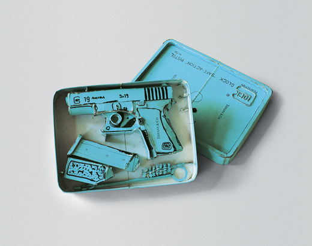

The widespread use of sarcasm as a critical tool in the modern world is to be expected. The idea of using sarcasm as a weapon for criticism is not entirely new; The use of sarcasm as a tool against the consumer culture dates back to at least the 1970s, and the term itself was first documented in Oxford English Dictionary in 1695. It is still effective to this day and has become somewhat trendy for the past years. The modern language of marketing and advertising provokes the so-called peaceful protests and is the reason for the increase in the frequency of sarcasm use by individual designers. It is also the reason for the emergence of a number of movements such as subvertizers and anti-brand activists, for whom sarcasm is the main language for expressing their position.
Subvertisement as a whole can be interpreted as a strategy for resistance against the culture of advertising, a somewhat peaceful protest. As claimed by Special Patrol Group in the interview for Huckmag (2016) ‘Not only does advertising frequently promote negative stereotypes, but it also dominates our visual realm and privileges extrinsic behaviors over intrinsic.’, which is what the members of the movement fight against. While it is hard to say when exactly subvertising originated as a method, the history of organized mass-subvertisement dates back to at least the 1970s. The earliest known form of subvertising belongs to the Billboard-Utilising Graffitists Against Unhealthy Promotions, also known as the B.U.G.A.U.P. collective, and was directed against tobacco advertising in 1973. Sometime later in 1977, the Billboard Liberation Front, also known as BLF, was founded in San Francisco. Their practice was directed towards what they called “improvement” of the outdoor advertising, with the longterm goal to inspire others to do the same. Both B.U.G.A.U.P. and BLF still run blogs that give advice to prospective practitioners and comment on their history.
Even though subvertising is a relatively modern term it can be used to describe any kind of action taken to subvert ads. This can vary from spontaneous actions in the graffiti style to the more organized and polished modern campaigns. Traditionally, subvertising has been driven by a variety of reasons and motivations: from sarcastic remarks and objections towards individual products and the consumer culture to satirical notes and comments directed at political leaders. Even though the techniques for modifying, manipulating, and reflecting upon certain subjects may remain mostly the same, today's subvertisers usually form more organized groups with a more specific vision. As Thomas Dekeyser (2015) notes: ‘Today, the practice of subvertising is reaching novel heights. Collectives are starting to connect globally to form an ever-increasing force of resistance against the visual and mental implications of advertising.’ The reason for that is the rapid speed of consumer culture and aggressive advertisement expansion and political disagreements, that have reached new heights. All of it has provoked more extreme reactions and the need for more organized actions.
In terms of action, subvertising mainly consists of transforming the original or creating a new piece based on a particular ad. It promotes building resistance against both the visual and psychological effects of advertisement. In addition to this, it inspires critical thinking and reaction towards the modern-day adverts and the modern-day language of the capitalistic society. An example of such actions is a project by The Yes Man collective, where they recruited thousands of social activists to distribute 100,000 copies of a spoof New York Times Newspaper. The spoof made by members of the collective consisted of a number of fake articles and images, that were meant to look authentic when placed in the what looked like a commonly trusted source. The goal was to use a tangible and trusted medium, in their case the New York Times, to argue for a specific future. (theyesmen.org, 2018)
Another movement with similar ideas is anti-brand activists. Their main goals are intended to illustrate ethical issues related to the advertised products. Whereas in subvertisement, the range of mediums varies from logo parodies, poster manipulation, and even video works, the main medium used by anti-brand activists is spoof ads and precise doppelgängers of existing adverts and campaigns. The doppelgängers get pejoratively changed and spread via social media, blogs, and websites, such as Ad Busters. Such campaigns have proven to be quite effective, as Markus Giesler notes in the Journal of Marketing (2012) ‘A 2012 study concluded that doppelgänger brand images were able to negatively affect sales’.
One of such spoof ads shared by Ad Busters is Fashion Slashin’ series by Nancy Bleck. She mocks ads and campaigns from worldwide famous fashion companies and the beauty stereotypes they promote. Typically, such campaigns display borderline anorexic look for women and overly muscular bodies for men, often putting the advertised images through intense photoshop manipulations upon releasing to enhance the resemblance of a particular beauty standard. Bleck explores the reality behind such images and mocks the unrealistic body standards and unhealthy body image by recreating the adverts, that display the opposite Bleck, N. 2011, Fashion Slashin’. Reality for Men body types than normally promoted in the fashion world and working with slogans that represent the behind the scenes world of the fashion advertisement much more accurate than the original ones.
Another example of similar reflection and use of sarcasm via different medium is Tom Sachs’ practice and his series called Cultural Prosthetics in particular. First known for his installation Hello Kitty Nativity that depicts traditional nativity scene that he created for Barney's shop in New York, his work focuses and reflects upon the obsession with consumerist culture and the influence the world of advertising has on the society. From the very Sachs, T. 1994, Hello Kitty Nativity, [Duct tape, synthetic polymer paint] beginning, Sachs did not hesitate to change the classic motives to fit his style; For the Hello Kitty Nativity, he replaced the key characters with contemporary pop-culture figures. The Three Kings were made to look like Bart Simpson, ‘the rebellious cartoon character’ (Weber, 1994), the Virgin Mary was replaced with the pop singer Madonna, wearing a leather outfit and posed with her legs spread, and instead of the Christ figure Sachs placed the children's toy Hello Kitty, shown as a cat with a beanie on its head. The new characters were all dressed in clothes by Chanel and Hermes, and the McDonald’s logo was placed over the crib. This way Sachs’ wanted to draw attention to the problem of brand obsession and the culture of consumerism. The installation was taken down soon after due to a number of angry calls from offended by the Christ-cat religious activists. ‘I chose Hello Kitty because she means nothing. She does not have a TV show, she only exists as plastic crap. In this time of consumerism there is nothing like that. Everything really tries to mean something’, states Sachs (Artist Talk: Tom Sachs—Why Hello Kitty?, 2015).
This was followed by Sachs’ first solo exhibition in 1995 called Cultural Prosthetics. As a part of the project, Sachs combined high-end fashion brands with weapons and created grenade sculptures with the Hermes logo, a Glock pistol combined with Tiffany identity, and a makeshift rifle. For an exhibition called Creativity is the Enemy that took place later that year, he added the Chanel guillotine, that later became one of his signature Sachs, T. 1995, Tiffany Glock (Model 19), [cardboard, thermal adhesive, ink] pieces, and the Prada concentration camp model to the list of installations. Therefore, instead of looking dangerous and deadly the weapons looked glamorous and desirable just from the added elements of famous branding. As mentioned in the exhibition review on the Trend Hunter portal (Young, 2013), ‘Decapitating in designer style, modern society would probably make it legal thanks to the branding scrawled all over it. The allure of the Chanel name would put anyone in a trance, which seems more dangerous that this beheading machine.’ The quote describes the effect the media has on society perfectly; Even such deadly weapons become something to be desired.
On the other hand, the series of works and especially the Chanel Guillotine could easily refer to the death sentence people's uncontrollable consumption is giving the world. Sachs sarcastically notes and mocks the society obsession over chic brands and reflects upon the consequences such obsession has.
As obvious as the effect the media has on the society is, it is not easy to resist. As noted by Sachs in his interview for The Talks (Robertson, 2016), ‘This is something that has been plaguing me my whole life: the effect advertising has over our self-image. Even though we understand that we continue to be part of the addiction and contribute to its power.’ Commenting and creating spoofs and satirical remarks on the market whilst still being part of it creates cognitive dissonance. Both Sachs’ practice and subvertisement movement can be seen as antipodes of the unhealthy nature of the aggressive advertisement and as a rebellion against the culture of capitalist society, yet it can not exist outside it. Creators are still part of the consumer culture and still engage with brand machines, that they fight against. Whether it is buying a new pair of underwear or a new phone, without putting themselves into complete social isolation they are forced to engage with what they believe is wrong. Sachs notes (Robertson, 2016), “I’m a victim of this system as much as I benefit from the luxury of the experience.
Such projects as Cultural Prosthetics and Fashion Slashin’ are meant to prevent the advertisement industry from establishing false values and to build resistance against the culture of mindless mass consumption. In short, both anti-bran activists and individual creatives such as Tom Sachs work against the mass-market machine, political manipulation, and toxic standards to create a healthier society using sarcasm and irony as a tool. Whereas, the main language for such actions is either sarcastic remarks or ironical spoof projects, the majority of activists cannot exist outside of what they fight against, therefore creating cognitive dissonance. In such scenario, sarcasm might not only work as a provocative gesture to gain attention and build a “better” society, but also a coping mechanism of some sorts.
Overall, the consumer culture that gets glorified also provokes a wave of sarcastic remarks from the creatives all over the world. It is impossible to ignore the negative aspects of consumerism, the unhealthy stereotypes and beauty standards the industry promotes, and the intense obsession with the brands promoted by the world of advertising. In such conditions, the widespread use of sarcasm as a tool for criticism is to be expected. The modern language of marketing and advertising provokes the so-called peaceful protests, the emergence of various anti-brand movements, and practice by individual creatives aimed to build resistance against false values and the culture of mindless mass consumption. For the majority of such activists sarcasm and irony is the main language for expressing their beliefs and a tool to create a healthier society free of toxic stereotypes and unhealthy obsessions promoted by the consumerist society.
